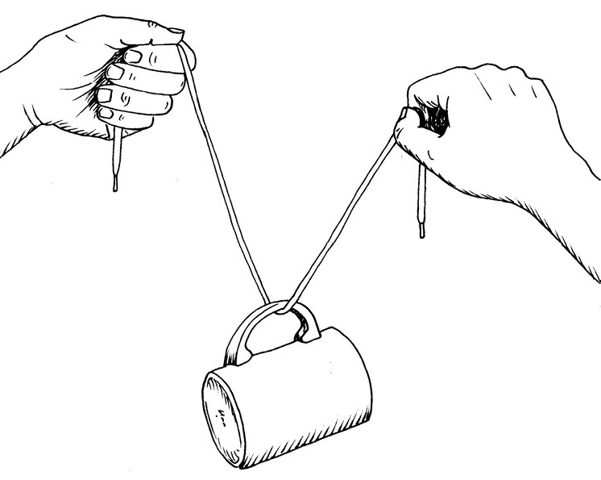
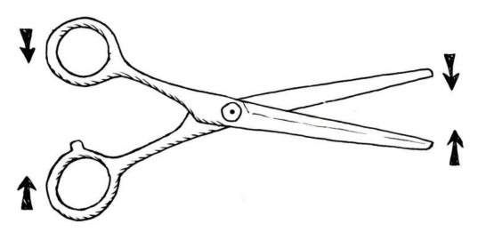
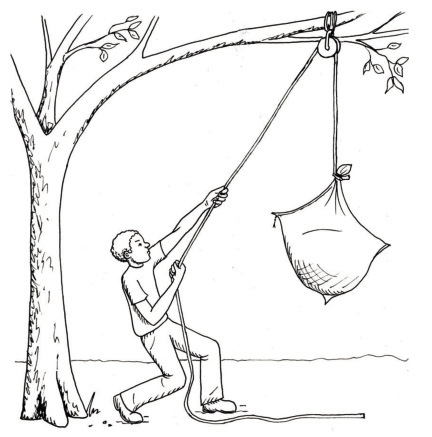

Pulleys and controllers

Change direction with a string or rope
Different ways to lift something up
The man in Figure 2A on the previous page wants to lift the sack with wet grain right up to the branch. He wants to fasten the sack to the branch, so that it can hang there till the wind has dried the grain out. To get the sack up, he slung a rope over the branch and fastened the one end of the rope to the sack.
-
Mark the direction in which the man pulls with an arrow, on the picture on the previous page.
-
Mark the direction in which the sack will move with an arrow too.
-
-
Do you think the rope will last forever if the man uses it often to pull heavy objects up around the branch?
Figure 3: This rope has been rubbed against the edge of a brick.
If you pull heavy objects up many times with the same piece of rope or string, the rope will wear out as you can see in the photograph. It will eventually break.
When two surfaces rub against each other, there are forces that act on the materials, and parts of the materials may break. The forces that act when materials rub against each other are called friction forces. On a cold day you sometimes rub your hands against each other to warm them up. The warmth comes from the friction forces.

To prevent friction from harming a rope that is used to change the direction of pulling an object, one may let the rope run over a wheel that is called a pulley.

The system that the man in Figure 5 uses is called a single wheel fixed pulley system. Its purpose is to change the direction of pull, but it does not give a mechanical advantage.
The man cannot lift the sack from the ground up to the branch with one pull. He needs to make a plan so that the sack will not drop down again while he shifts his hands to get ready for another pull.
The diagram on the right shows a device called a cam cleat. If you pull the rope upwards, the cams will close in on the rope and prevent it from passing through. If the rope is pulled downwards, the cams are pushed apart and the rope can pass through easily.
Devices like a cleat, or the valves you learnt about in Chapter 6, allow certain movements, but prevent other movements. Devices such as these are called control devices.
You can experiment with a pencil between your thumb and forefinger as shown below, to experience how a cam cleat works.
-
Make a rough sketch in the space below to show where the man in Figure 5 can put a cam cleat to make it easier to lift the sack up to the branch.

An important experiment
You need a piece of string or a shoelace, and a cup or beaker with a handle.
Put the cup on your desk. Pull the string or shoelace through the handle of the cup. Hold the one end of the shoelace in the air with your left hand. Pull the other end of the string upwards with your right hand to lift the cup. Let the string slide through the handle.

Is the cup raised by the same distance as you raised your right hand? Repeat the experiment and observe the movements so that you can observe the distances clearly. Try to explain your observation.
Different ways to use a pulley
The system on the right is called a block-and-tackle.
Look carefully at the three diagrams on the opposite page, that show different ways in which pulleys can be used when lifting an object with a rope.
In the diagrams, the red pulleys are fixed to the support structure: they can turn but they cannot move. The red pulleys are called fixed pulleys. The blue pulleys can move, and they are called moveable pulleys.
Figure 10C shows a single wheel fixed pulley system.
Figure 10B shows a single wheel moveable pulley system.
Figure 10A shows a pulley block system, also called a block and tackle.
-
Look carefully at Figures 10A and 10C.
-
If the rope in Figure 10A is pulled down by 50 cm, will the load (the black object) also move up by 50 cm?
-
If the rope in Figure 10B is pulled up by 50 cm, will the load (the black object) also move up by 50 cm?
-
When will you do more work, when you pull the rope in Figure 10A down by 50 cm, or when you pull the rope in Figure 10C down by 50 cm?

Figure 10A Figure 10B 
Figure 10C In pulley systems such as these, the purpose of the fixed pulleys, that are shown in red, is to change the direction of the rope, so that you can pull down to lift an object up. It is easier for your body to pull a rope downwards than to pull it upwards.
-
-
In what way do the moveable pulleys, shown in blue, help to make it easier to lift the black object? If you have difficulty with this question, remember what you experienced when you did the experiment with the string and the cup on page 103.
The picture below could help you to better understand how a moveable pulley system works.

Suppose the load is 50 cm below the hook. To pull the load up to the level of the hook, the hand must pull up 100 cm of rope. So the hand moves up 100 cm while the load only moves up 50 cm.
Because the hand moves twice the distance of the load, the force required is the same as you would need to pick up half the load (5 kg) directly.
Mechanical control systems
You can ride a bicycle very fast.
However, to be safe when you ride a bicycle, you need to be able to control the speed. You need brakes. One type of bicycle brake is shown in the photograph on the right. The diagrams on the next page will help you to understand this photograph better.
Think of a pair of scissors:

A pair of scissors can also be made like this:
The handles could be bent like this:

The brake system in the photograph (Figure 13) is actually a pair of callipers, as you can see from Figure 17 on the opposite page.
-
Do the following:
-
On the picture above, draw the part of the bicycle wheel that fits between the brake blocks. This is the front view.
-
On the next page, draw a side view of the calliper (note that the brake blocks will look different in a side view and there will be a few hidden lines).
Colour the two arms with different colours.
Label the brake blocks and pivot.
Use arrows to show how the parts move when the brake is pulled.
Make your drawing of the side view of a bicycle calliper brake system here:
-
Car disc brakes also use a caliper. This caliper works in a different way to a bicycle brake. It exerts a squeezing force on a disc behind the car wheel.
A disc brake system consists of a brake disc, a caliper and brake pads.
When the brake pedal is pushed, it moves the input piston, which pushes hydraulic oil into the output piston.
The output piston then squeezes the brake pad against the surface of the brake disc. This contact causes friction, which forces the vehicle to slow down or stop.
One-way control systems
A brake system prevents movement completely. It does not allow movement in any direction.
A valve system, like that in a hydraulic car jack, only prevents flow (movement of a liquid) in one direction, but allows flow in the opposite direction. A cam cleat is like a valve, it allows movement in one direction, but not in the opposite direction.

The device below is called a ratchet and pawl. The wheel with the teeth is the ratchet, and the other object is the pawl.

-
Make a free-hand sketch at the bottom part of the next page to show how a one-way control system can be used together with a block and tackle system to lift heavy loads.

Draw a block and pulley with a one-way control system in the space below:
A question to make you think
Why is it easier for the girl to get across the wall, than for the boy? Try to explain how this is similar to levers, hydraulic systems and moveable pulley systems.


Next week
Next week, you will learn more about different kinds of gears and gear systems.